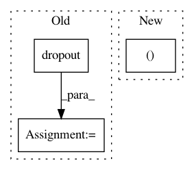

7dcc162114ac1d3c3846150d5c600f4d8683fa73,onmt/Models.py,InputFeedRNNDecoder,_run_forward_pass,#InputFeedRNNDecoder#Any#Any#Any#Any#,429
Before Change
output = self.context_gate(
emb_t, rnn_output, attn_output
)
output = self.dropout(output)
else:
output = self.dropout(attn_output)
outputs += [output]
attns["std"] += [attn]
After Change
decoder_input = torch.cat([emb_t, input_feed], 1)
rnn_output, hidden = self.rnn(decoder_input, hidden)
decoder_output, p_attn = self.attn(
rnn_output,
memory_bank.transpose(0, 1),
memory_lengths=memory_lengths)
In pattern: SUPERPATTERN
Frequency: 3
Non-data size: 3
Instances
Project Name: OpenNMT/OpenNMT-py
Commit Name: 7dcc162114ac1d3c3846150d5c600f4d8683fa73
Time: 2018-02-16
Author: srush@seas.harvard.edu
File Name: onmt/Models.py
Class Name: InputFeedRNNDecoder
Method Name: _run_forward_pass
Project Name: OpenNMT/OpenNMT-py
Commit Name: 3bc7e38ed98f3b7a13fcee2726ec38b27e5c4e1b
Time: 2017-06-23
Author: srush@sum1gpu02.rc.fas.harvard.edu
File Name: onmt/Models.py
Class Name: Encoder
Method Name: forward
Project Name: OpenNMT/OpenNMT-py
Commit Name: 7dcc162114ac1d3c3846150d5c600f4d8683fa73
Time: 2018-02-16
Author: srush@seas.harvard.edu
File Name: onmt/Models.py
Class Name: StdRNNDecoder
Method Name: _run_forward_pass